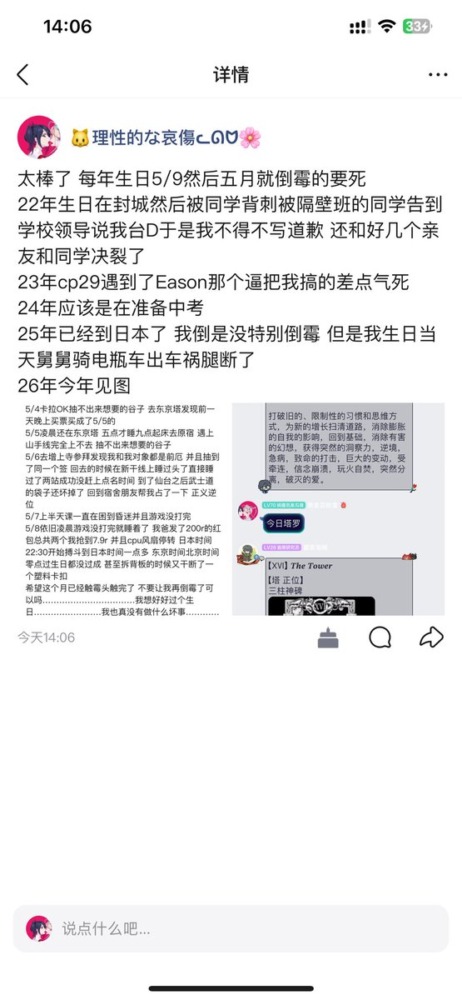
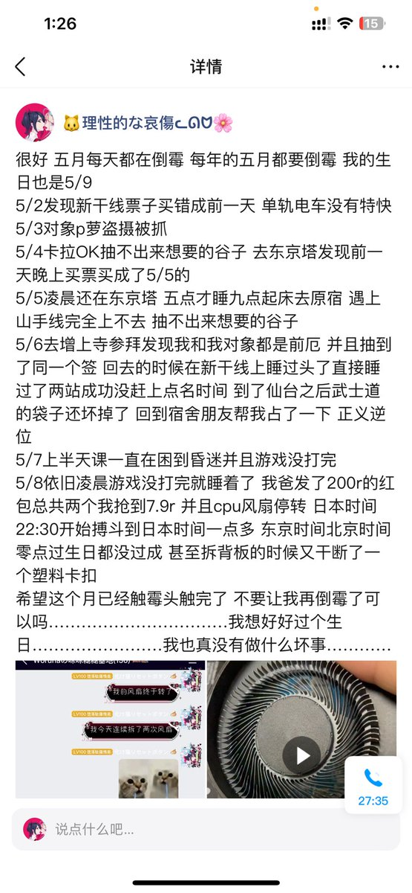
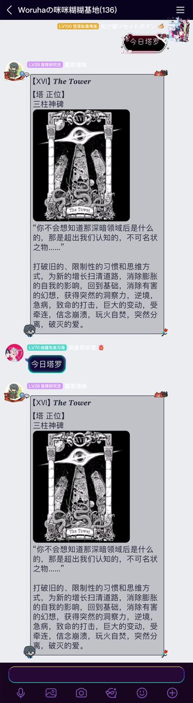

铨铨今天过生日！
@YongQuan
RT @Woruha3: 太棒了 每年生日5/9然后五月就倒霉的要死
22年生日在封城然后被同学背刺被隔壁班的同学告到学校领导说我台独于是我不得不写道歉 还和好几个亲友和同学决裂了
23年cp29遇到了Eason那个逼把我搞的差点气死
24年应该是在准备中考
25年已经到日本了…



Woruha
@Woruha3
太棒了 每年生日5/9然后五月就倒霉的要死
22年生日在封城然后被同学背刺被隔壁班的同学告到学校领导说我台独于是我不得不写道歉 还和好几个亲友和同学决裂了
23年cp29遇到了Eason那个逼把我搞的差点气死
24年应该是在准备中考
25年已经到日本了 我倒是没特别倒霉 https://t.co/wTWG1IdUvq